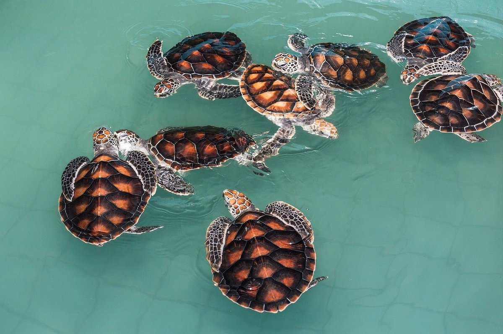
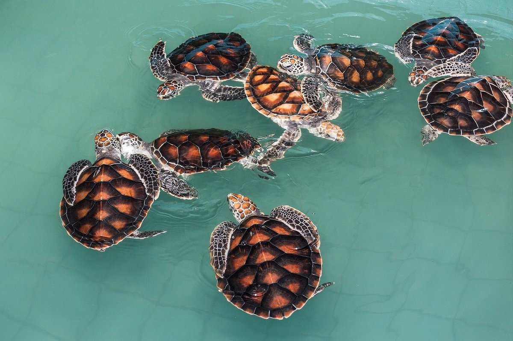

Turtle Hatcheries In Sri Lanka


 


| Location : | Hikkaduwa Main Beach |
| Cost : | Free |
| Rating : | 5/5 – One of the best wild turtle encounters in Sri Lanka |
If you’ve ever wanted to swim in the ocean with massive sea turtles, then Hikkaduwa is the place to do it. Right from the shore in town, you can easily spot many sea turtles just hanging out in the water. They aren’t scared of people and often swim right up to you! There is one particular spot that always seems to have turtles in Hikkaduwa. The spot is located in front of the Hikka Tranz Cinnamon hotel. You can easily get here from the main beach in Hikkaduwa, just turn left (if you’re facing the ocean) and walk up around the bay until you reach the end. Here, you will see a couple of signs about the turtles. This is where you are most likely to spot them!If you’re confused, just look for the concrete steps and handrail in front of the hotel on the beach. Or, just ask one of the lifeguards.
Tip :
Don’t touch or feed the turtles as it’s actually a crime in Sri Lanka. Try to just watch them peacefully and disturb them as little as possible!
| Location : | Hikkaduwa Main Beach |
| Cost : | Free |
| Rating : | 5/5 – Very nice experience and the babies are so cute! |
If you love turtles as much as I do, then swimming with the adults is great, but seeing baby turtles is even better! On Hikkaduwa Beach, they have a small guarded turtle hatchery where they keep turtle eggs. Between the months of January and April, it is possible to visit this enclosure and see if any turtles are hatching. In the evening around 6:30 pm, they release the turtles from the enclosure and let them run for the ocean! You can visit the hatchery at any time when you walk along the main beach, however, there may not be any turtles in it. Keep checking throughout the day as once they hatch you’ll know they’re about to be released! This is a public area and free for anybody to join. They even let some tourists help transport the baby turtles from the hatchery to the beach. Watching the turtles is very special and easily one of the best things to do in Hikkaduwa, Sri Lanka.
Tip :
Don’t touch or feed the turtles as it’s actually a crime in Sri Lanka. Try to just watch them peacefully and disturb them as little as possible!